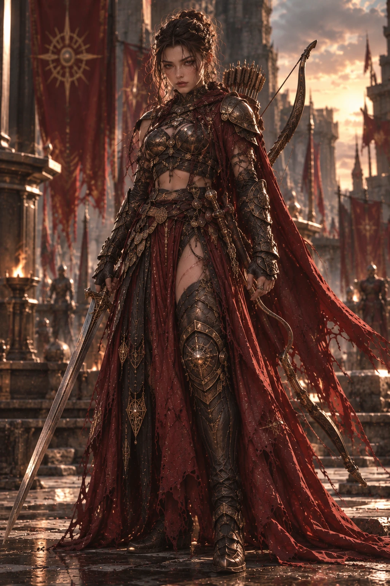
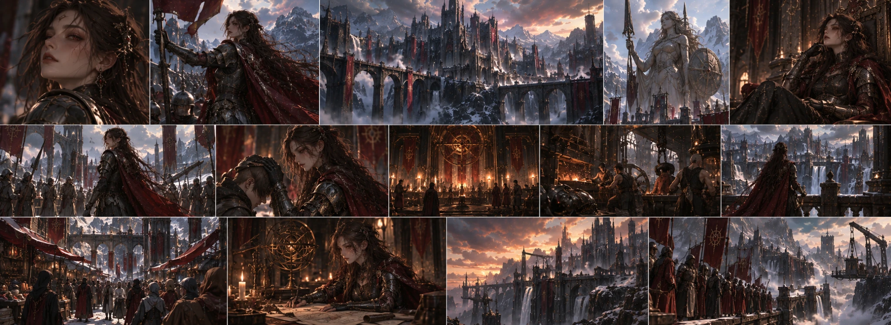

DARA’S FORTRESS
One of the centers of Drakvar’s defensive tradition. Dark stone and metal structures built to be durable rather than ostentatious carry the kingdom’s character.

Goddess of War
War · Protection · Discipline · Strength · Strategy · Loyalty · Balance
Dara does not see war itself as sacred.
Explore her teaching ↓War · Protection · Discipline · Strength · Strategy · Loyalty · Balance Dara does not see war itself as sacred.
For her, war is a tool sometimes used when no other path remains. A warrior’s worth is measured not by how many people they can defeat, but by knowing when to use their strength and when not to.
For this reason, Dara is the goddess not only of battlefields, but also of borders, defense, military discipline, and the courage shown to protect others. She does not see uncontrolled anger as strength. Anger can move a warrior to act. But once it begins to rule them, the warrior is no longer the master of their own weapon. “Strength is being able to restrain yourself simply so as not to destroy.”
Among the seven sisters, Dara is the sister who steps between others and danger rather than retreating when it appears. Her protective nature is at the heart of her character. Yet this protective instinct does not make her gentle.
Dara can make extremely ruthless decisions when someone she loves needs protection. Because, in her eyes, protection is not merely taking someone away from danger; when necessary, it means eliminating the danger itself.
When conflict arises among her sisters, Dara tends to concern herself with concrete outcomes rather than long philosophical arguments: Who is in danger? What is the threat? What is needed to stop it? This directness sometimes leads to disagreements with her other sisters. Yet Dara’s aim is often not to prevail. It is to ensure that something remains standing.
For Dara, power is not morally good or bad. What matters is what the person who carries it does with it. A sword can kill someone. The same sword can save someone else’s life. An army can conquer a city. The same army can stand at that city’s gates and allow thousands of people to live. This is why, in Dara’s teaching, being a warrior means knowing why you fight before knowing how to kill.
What Dara despises most is not fear. Fear is human. What she despises is putting others in danger and declaring yourself brave. For Dara, true courage is not the absence of fear: It is being able to remain where your responsibility lies despite fear.
Drakvar’s identity has been strongly influenced by Dara’s teaching. Its harsh geography, dark stone structures, metalwork, and architecture that values defense form the kingdom’s character. Drakvar’s fortresses are not merely displays of power. They were built to endure. Walls, bridges, passes, lookout points, and defensive structures are natural parts of the people’s lives.
Yet it would be wrong to see Drakvar as a kingdom made up only of soldiers.
Smiths, craftspeople, miners, engineers, merchants, and families are part of this world. Metal becomes not only weapons, but also everyday tools, structures, artworks, and mechanisms that keep the kingdom standing.
Dara’s influence can be clearly seen here: Strength is not used only to fight. It is also used to build.
In Drakvar’s tradition, being able to carry a weapon does not by itself mean being a warrior. Discipline lies at the heart of training. As warriors train their bodies, they also learn decision-making, the consequences of orders, and the responsibility they bear for the lives of those fighting beside them. Because, according to Dara’s teaching, the most dangerous person on the battlefield is not the strongest.
It is the one who does not know the limits of their strength. For this reason, retreat is not always considered cowardice. Nor is avoiding an unnecessary war weakness. Sometimes, the only way to win is not to fight. But when war is unavoidable, Dara’s teaching is equally clear: Be ready.
Weapons have an important place in Dara’s iconography. Yet weapons matter not because they are sacred, but because of the responsibility they carry. Taking up a weapon is declaring that you are capable of using it. For this reason, the sword, bow, and arrows we use in depictions of Dara as a warrior are not merely aesthetic accessories. The sword represents facing a nearby threat;
the bow, distance, patience, and waiting for the right moment; and armor represents not only oneself, but the responsibility of being able to keep fighting. Dara’s own mastery of more than one form of combat is an extension of this thought. Strength is not a single method.
The people of Drakvar do not pray to Dara only before war. When a soldier sets out on duty for the first time, when a family prepares for a long separation, when a smith begins important work, when a city prepares for approaching danger, or even when a person faces a difficult decision they must confront in life, Dara’s name may be spoken. Because the courage Dara represents does not belong only to the battlefield.
Enduring is courage, too. For this reason, Dara’s place among the people is closer to a protector believed to stand behind them than to a feared deity of war. Yet asking Dara for help is believed to have a price: Someone who asks her for protection must also be ready to protect someone else when necessary.
Dara does not sanctify victory. She does not believe that every war won was the right war. Taking a city may be a victory. But if you destroyed everything that needed protecting while doing so, in Dara’s eyes you may not have won. Likewise, defeat is not always dishonor. Sometimes, a lost battle can buy hundreds of people time to escape.
Sometimes, retreat is the only way to be able to rise again in the future. For this reason, in Dara’s teaching this question matters as much as the outcome of war: “What did you protect?”
Dara has a strong protective instinct toward her sisters. Yet this does not mean she will support every decision they make. If she believes one sister’s behavior puts the others in danger, she may stand against her. Yuna may first seek balance. Nora may examine approaching possibilities. Talia may want to understand the whole truth. Dara’s mind works more directly in a crisis:
“Who do we need to protect right now?” This quality makes Dara someone who can decide quickly. But it is also the source of her flaw. Because when the desire to protect grows too strong, it can turn into control. One of the hardest things Dara must learn is that she cannot fight every battle of the people she loves on their behalf.
Dara is disciplined, determined, and direct. She is not as closed as Nora about hiding her feelings; yet she tries not to place them ahead of her decisions. She does not trust easily. But once she begins to trust someone, she is extremely loyal. She places great importance on keeping promises and sees deliberately breaking another person’s trust, especially during war, as a grave betrayal.
She does not like showing her own pain. This is why Dara’s strength also creates one of her most dangerous weaknesses: Thinking she can carry everything alone. She is so accustomed to protecting others that she sometimes struggles to accept that she, too, may need protection.
“Strength is being able to restrain yourself simply so as not to destroy.”
Dara

One of the centers of Drakvar’s defensive tradition. Dark stone and metal structures built to be durable rather than ostentatious carry the kingdom’s character.
Drakvar’s warriors learn not only to use weapons, but also discipline, coordination, and when retreat is necessary.
Those who come here are believed to ask more for endurance and the strength to protect their loved ones than for victory.
Dara’s statues usually depict her standing and ready rather than seated on a throne. She has a weapon, but is not always shown attacking.
Metalwork does not only meet the army’s needs. Craft, engineering, and everyday life are equally important parts of Drakvar’s metal culture.
Drakvar’s defensive structures are built around the idea of protecting the kingdom’s borders and the people within them, rather than conquest.
Beneath its harsh appearance, Drakvar is a living society. Workshops, markets, and family life continue in the shadows of its fortresses; preparations for war are not the whole of life.